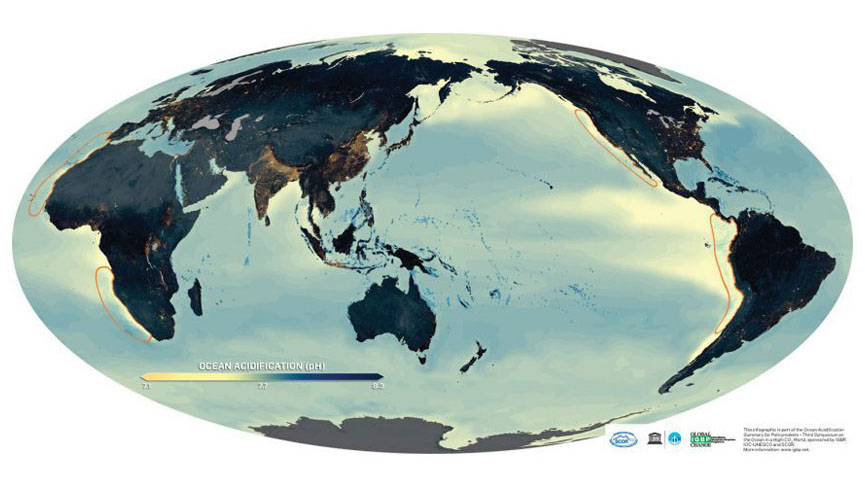

The current warming trend is significant because it is unmistakably the product of human activity since the mid-twentieth century, and it is occurring at a rate that has never been seen before in millennia. Human activities have undeniably warmed the atmosphere, oceans, and land, causing widespread and rapid changes in the atmosphere, ocean, cryosphere, and biosphere.
Scientists have been able to view the big picture because of Earth-orbiting satellites and other technical breakthroughs, which have allowed them to collect a wide range of data on our planet and its climate on a global scale. The signals of a changing climate are shown in this corpus of data, which has been gathered over many years.
The Statistics of Climate Change
These figures clearly show that the first decade of the twenty-first century was the warmest since the 1880s, and the first decade in which the global average annual temperature above 14.5 degrees Celsius (58 degrees Fahrenheit). Despite the overall rise, global temperatures have not been consistently rising over the decades. From the 1880s to the 1910s, the average annual worldwide temperature was roughly 13.7°C (56.7°F). Temperatures rose by around 0.1°C (0.18°F) per decade from the 1920s through the 1940s. Until the 1980s, worldwide average temperatures remained about 14.0°C (57.2°F).
Since 1980, the planet has been hotter at a pace of roughly 0.2 °C (0.36 °F) per decade. From 2000 to 2009, the average global temperature was 0.61 °C (1.1 °F) higher than it was from 1951 to 1980. If current trends continue, the planet will warm by 2 degrees Celsius (3.6 degrees Fahrenheit) over the next century.
Evidences of Climate Change
The climate of the Earth has shifted over time. There have been seven cycles of glacial advance and retreat in the last 650,000 years, with the abrupt end of the last ice age marking the start of the contemporary climate era and of human civilization. The majority of these climate shifts are due to minute changes in Earth's orbit that alter the quantity of solar energy received by our planet. The current warming trend is significant because it is unmistakably the product of human activity since the mid-twentieth century, and it is occurring at a rate that has never been seen before in millennia. Human activities have undeniably warmed the atmosphere, oceans, and land, causing widespread and rapid changes in the atmosphere, ocean, cryosphere, and biosphere. Scientists have been able to view the big picture because of Earth-orbiting satellites and other technical breakthroughs, which have allowed them to collect a wide range of data on our planet and its climate on a global scale. The signals of a changing climate are shown in this corpus of data, which has been gathered over many years.
Carbon dioxide and other gases' ability to trap heat was demonstrated in the mid-nineteenth century. Many NASA equipment is based on their ability to influence the transmission of infrared light through the atmosphere. There is no doubt that rising quantities of greenhouse gases will cause the Earth to warm. Greenland, Antarctica, and tropical mountain glaciers have all provided ice cores that illustrate how the Earth's climate responds to fluctuations in greenhouse gas levels. Tree rings, ocean sediments, coral reefs, and layers of sedimentary rocks all contain ancient data. The current rate of warming is nearly ten times greater than the usual rate of ice-age recovery, according to this ancient, or paleoclimate, evidence. After the last Ice Age, carbon dioxide from human activities increased more than 250 times faster than it did from natural sources.
These are the following evidences of why our climate changes:
1. Global Temperature Rise
Since the late 1800s, the planet's average surface temperature has climbed by around 2.12 degrees Fahrenheit (1.18 degrees Celsius), owing mostly to rising carbon dioxide emissions into the atmosphere and other human activities. The last 40 years have seen the most warming, with the last seven years being the warmest. 2016 and 2020 are tied for the warmest year ever recorded.
2. Warming Ocean
The water has absorbed much of the extra heat, with warming of more than 0.6 degrees Fahrenheit (0.33 degrees Celsius) in the top 100 meters (about 328 feet) since 1969. The oceans store 90% of the surplus energy produced by the Earth.
3. Shrinking Ice Sheets The mass of the Greenland and Antarctic ice sheets has shrunk. Greenland lost an average of 279 billion tons of ice every year between 1993 and 2019, according to NASA's Gravity Recovery and Climate Experiment, while Antarctica lost roughly 148 billion tons per year.
4. Glacial Retreat
In the Alps, the Himalayas, Andes, Rockies, Alaska, and Africa, glaciers are disappearing practically everywhere.
5. Decreased Snow Cover
The amount of spring snow cover in the Northern Hemisphere has reduced during the last five decades, according to satellite data, and the snow is melting earlier.
6. Sea Level Rise
In the last century, the global sea level risen by around 8 inches (20 centimeters). However, in the recent two decades, the rate has roughly doubled that of the previous century and is increasing slightly each year.
7. Declining Arctic Sea Ice
Over the last several decades, both the extent and thickness of Arctic sea ice have significantly decreased.
8. Extreme Events
Since 1950, the number of record hot temperature events has increased in the United States, while the number of record low temperature events has decreased. In addition, the United States has seen an increase in the number of severe rainfall events.
9. Ocean Acidification

The acidity of surface ocean waters has grown by around 30% since the beginning of the Industrial Revolution. This rise is due to humans putting more carbon dioxide into the atmosphere, which is then absorbed by the ocean in greater amounts. In recent decades, the ocean has absorbed between 20% and 30% of total anthropogenic carbon dioxide emissions (7.2 to 10.8 billion metric tons per year).
This website was created by the Powell Team 1 of City of Mandaluyong Science High School
Site Developer: Maien Pangilinan
Web Designer: Wyndle Wyne Calansingin
Program Manager: Joanna Mari Maravilla
Subjects Heads:
Vince Nathan Alfonso
Kirstine Zianne Alfaro
Princess Danielle Mendoza
Juan Mendiola
Kimberly Torcino
 These figures clearly show that the first decade of the twenty-first century was the warmest since the 1880s, and the first decade in which the global average annual temperature above 14.5 degrees Celsius (58 degrees Fahrenheit). Despite the overall rise, global temperatures have not been consistently rising over the decades. From the 1880s to the 1910s, the average annual worldwide temperature was roughly 13.7°C (56.7°F). Temperatures rose by around 0.1°C (0.18°F) per decade from the 1920s through the 1940s. Until the 1980s, worldwide average temperatures remained about 14.0°C (57.2°F).
These figures clearly show that the first decade of the twenty-first century was the warmest since the 1880s, and the first decade in which the global average annual temperature above 14.5 degrees Celsius (58 degrees Fahrenheit). Despite the overall rise, global temperatures have not been consistently rising over the decades. From the 1880s to the 1910s, the average annual worldwide temperature was roughly 13.7°C (56.7°F). Temperatures rose by around 0.1°C (0.18°F) per decade from the 1920s through the 1940s. Until the 1980s, worldwide average temperatures remained about 14.0°C (57.2°F).